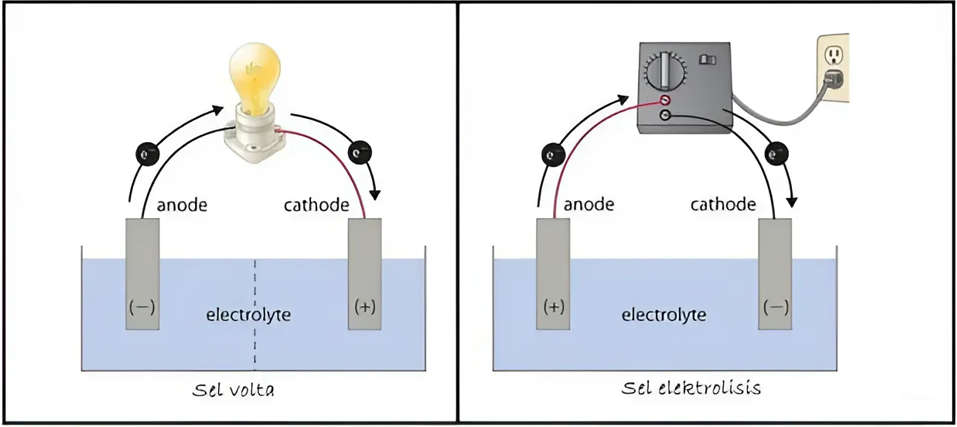

Elektrokimia mempelajari semua reaksi kimia yang disebabkan oleh energi listrik serta semua reaksi kimia (reaksi redoks) yang berkaitan dengan listrik. Secara umum, elektrokimia dibagi menjadi dua, yaitu sel volta dan sel elektrolisis. Perbedaan sel volta/galvani dan sel elektrolis adalah:
Sel elektrokimia (sel volta) menggunakan reaksi redoks untuk menghasilkan energi listrik, energi kimia diubah menjadi listrik. Cara kerjanya adalah:
Y+ + e- → Ysaat katoda bereaksi dengan elektrolit Y.
X → X+ + e-saat anoda bereaksi dengan elektrolit X.
X + Y+ → X+ + Y(spontan), sehingga arah elektron mengalir dari katoda ke anoda.
Sel elektrolisis merupakan penggunaan energi listrik untuk membangkitkan reaksi redoks, energi listrik diubah menjadi energi kimia. Cara kerjanya adalah:
X- → X + e-.
Y+ + e- → Y.
B- + A+ → B + A(tidak spontan).
Sel Elektro Kimia (Sel Volta/Galvani)
Sel Volta merupakan sel elektrokimia yang menghasilkan energi listrik diperoleh dari reaksi kimia yang berlangsung spontan. Beberapa literatur menyebutkan juga bahwa sel volta sama dengan sel galvani. Diperoleh oleh gabungan ilmuan yang bernama Alexander Volta dan Luigi Galvani pada tahun 1786. Bermula dari penemuan baterai yang berasal dari caian garam.
Pada sel Volta terdapat elektroda yang berfungsi menghantarkan aliran listrik antara sel dengan lingkungan dan biasanya dicelupkan dalam elektrolit yang terlibat dalam reaksi. Elektroda dibagi menjadi dua jenis yakni Anoda dan Katoda:
Contoh reaksi redoks spontan dalam sel volta:
Zn → Zn2+ + 2e- (Oksidasi)
Cu2+ + 2e- → Cu (Reduksi)
Zn + Cu2+ → Zn2+ + Cu (Redoks)
Pada reaksi tersebut, setengah sel oksidasi terdiri dari batang seng (Zn) sebagai anoda yang dicelupkan ke dalam elektrolit Zn2+. Setengah sel reduksi terdiri atas batang tembaga (Cu) yang dicelupkan ke dalam elektrolit Cu2+.
Pada reaksi di atas, terdapat jembatan garam yang digunakan untuk mengatasi hambatan akibat pelepasan elektron dari masing-masing anoda dan katoda. Jembatan garam akan menarik ion-ion yang berlebih dalam kedua setengah-sel.
Dikarenakan listrik yang dihasilkan harus melalui reaksi kimia yang spontan, maka pemilihan larutan elektrolit harus mengikuti kaedah deret volta. Deret volta didapat dari data potensial elektroda standar sebagai berikut:
| Setengah Reaksi Reduksi | Eored (V) |
|---|---|
| Li | -3,05 |
| Na | -2,71 |
| H2 + 2OH- | -0,83 |
| Zn | -0,76 |
| Fe | -0,44 |
| N2H5+ | -0,23 |
| H2 | 0 |
| Cu | +0,34 |
| 4OH- | +0,40 |
| Fe2+ | +0,77 |
| Ag | +0,80 |
| NO + 2H2O | +0,96 |
| Mn2+ + 2H2O | +1,23 |
| 2Cl- | +1,67 |
| 2F- | +2,87 |
Urutan ion-ion berdasarkan peningkatan nilai potensial elektroda standar disebut deret volta. (Semakin kiri akan mudah teroksidasi dan semakin kanan makin mudah tereduksi)
Urutan ion-ion berdasarkan peningkatan nilai potensial elektroda standar disebut deret volta. (Semakin kiri akan mudah teroksidasi dan semakin kanan makin mudah tereduksi)
Li+, K+, Ba2+, Ca2+, N+, Mg2+, Al3+, Zn2+, Cr2+, Fe2+, Cd2+, Co2+, Ni2+, Sn2+, Pb2+, H+, Cu2+, Hg+, Ag+, Pt+, Au3+.
Sel Volta dibedakan menjadi tiga jenis: